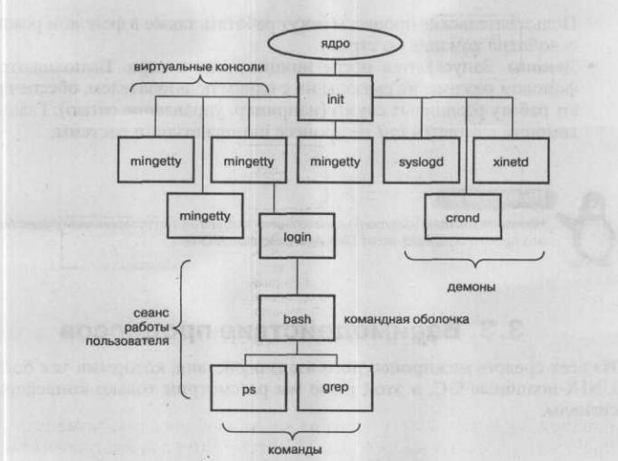

| Назад | Оглавление | Вперед |
Лабораторная работа 3Команды работы с процессамиЦель работы: изучение базовых средств управления процессами в ОС Linux. |
Чтобы эффективно управлять процессами и сервисами ОС Linux необходимо хорошо понимать, что представляет собой процесс с точки зрения ОС, и каким образом в ОС происходит взаимодействие между различными типами процессов.
Процесс - это объект ОС Linux, который состоит из адресного пространства памяти и набора структур данных. По сути, процесс это запущенная программа или служба.
Каждый запущенный процесс в ОС Linux может породить дополнительные процессы. Процесс, запустивший новый процесс называется родительским процессом. Новый процесс по отношению к создавшему его процессу называется дочерним.
Процессы - это не то же самое, что задачи: процессы являются частью операционной системы, тогда как о задачах известно только командному процессору, в котором они выполняются. Работающая программа заключает в себе один или более процессов; задача состоит из одной или более программ, выполняемых в виде команд командного процессора.
Каждый процесс в ОС Linux характеризуется набором атрибутов, который отличает данный процесс от всех остальных процессов. К таким атрибутам относятся:
* Идентификатор процесса (PID) . Каждый процесс в системе имеет уникальный
идентификатор. Каждый новый запущенный процесс получает номер на единицу больше
предыдущего.
* Идентификатор родительского процесса (PPID). Данный атрибут процесс получает во
время своего запуска и используется для получения статуса родительского процесса.
* Реальный и эффективный идентификаторы пользователя (UID,EUID) и группы (GID,
EGID). Данные атрибуты процесса говорят о его принадлежности к конкретному
пользователю и группе. Реальные идентификаторы совпадают с идентификаторами пользователя,
который запустил процесс, и группы, к которой он принадлежит.
Эффективные - от чьего имени был запущен процесс. Права доступа процесса к ресурсам ОС Linux
эффективными идентификаторами. Если на исполняемом файле программы установлен специальный бит
SGID или SUID, то процесс данной программы будет обладать правами доступа владельца исполняемого файла.
Для управления процессом (например, kill) используются реальные
идентификаторы. Все идентификаторы передаются от родительского процесса к дочернему.
Для просмотра данных атрибутов можно воспользоваться командой ps,
задав желаемый формат отображения колонок.
* Приоритет или динамический приоритет (priority) и относительный или статический (nice) приоритет процесса.
Статический приоритет или nice-приоритет лежит в диапазоне от -20 до 19, по умолчанию используется значение 0.
Значение –20 соответствует наиболее высокому приоритету, nice-приоритет не изменяется планировщиком,
он наследуется от родителя или его указывает пользователь.
Динамический приоритет используется планировщиком для планирования выполнения процессов. Этот приоритет хранится в поле prio
структуры task_struct процесса. Динамический приоритет вычисляется исходя из значения параметра пicе для данной задачи
путем вычисления надбавки или штрафа, в зависимости от интерактивности задачи.
Пользователь имеет возможность изменять только статический приоритет процесса. При этом повышать приоритет может только root.
В ОС Linux существуют две команды управления приоритетом процессов: nice и renice.
* Состояние процесса. В ОС Linux каждый процесс обязательно находится в одном из перечисленных ниже состояний и может быть
переведен из одного состояния в другое системой или командами пользователя.
Различают следующее состояния процессов:
o TASK_RUNNING — процесс готов к выполнению или выполняется (runnable). Обозначается символом R.
o TASK_INTERRUPTIBLE - ожидающий процесс (sleeping). Данное состояние означает, что процесс инициализировал выполнение
какой-либо системной операции и ожидает ее завершения. К таким операциям относятся ввод/вывод, завершение дочернего процесса
и т.д. Процессы с таким состоянием обозначаются символом S.
o TASK_STOPPED - выполнение процесса остановлено (stopping). Любой процесс можно остановить. Это может делать как система,
так и пользователь. Состояние такого процесса обозначается символом Т.
o TASK_ZOMBIE - завершившийся процесс (zombie). Процессы данного состояния возникают в случае, когда родительский процесс
не ожидая завершения дочернего процесса, продолжает параллельно работать. Процессы с таким состоянием обозначаются символом Z.
Завершившиеся процессы больше не выполняются системой, но по-прежнему продолжают потреблять ее не вычислительные ресурсы.
o TASK_UNINTERRUPTIBLE -непрерываемый процесс (uninterruptible). Процессы в данном состоянии ожидают завершения операции
ввода - вывода с прямым доступом в память. Такой процесс нельзя завершить, пока не завершится операция ввода/вывода.
Процессы с таким состоянием обозначаются символом D. Состояние аналогично TASK_INTERRUPTIBLE, за исключением того, что процесс
не возобновляет выполнение при получении сигнала. Используется в случае, когда процесс должен ожидать беспрерывно или
когда ожидается, что некоторое событие может возникать достаточно часто. Так как задача в этом состоянии не отвечает
на сигналы, TASK_UNINTERRUPTIBLE используется менее часто, чем TASK_INTERRUPTIBLE.
Типы процессов В Linux процессы делятся на три типа:
Иерархия процессов
В Linux реализована четкая иерархия процессов в системе. Каждый процесс в системе имеет всего одного родителя и может иметь один или более порожденных процессов.

Рис. 3.1 – Фрагмент иерархии процессов
На последней фазе загрузки ядро монтирует корневую файловую систему и формирует среду выполнения нулевого процесса, создавая пространство процесса, инициализируя нулевую точку входа в таблице процесса и делая корневой каталог текущим для процесса. Когда формирование среды выполнения процесса заканчивается, система исполняется уже в виде нулевого процесса. Нулевой процесс "ветвится", запуская fork прямо из ядра, поскольку сам процесс исполняется в режиме ядра. Код, исполняемый порожденным процессом 1, включает в себя вызов системной функции exec, запускающей на выполнение программу из файла "/etc/init". В отличие от нулевого процесса, который является процессом системного уровня, выполняющимся в режиме ядра, процесс 1 относится к пользовательскому уровню. Обычно процесс 1 именуется процессом init, поскольку он отвечает за инициализацию новых процессов. На самом деле вы можете поместить любую программу в /sbin/init и ядро запустит её как только закончит загружаться. Задачей init'а является запуск всего остального нужным образом.
Init читает файл /etc/inittab, в котором содержатся инструкции для дальнейшей работы. Первой инструкцией, обычно, является запуск скрипта инициализации. В системах, основанных на Debian, скриптом инициализации будет /etc/init.d/rcS, в Red Hat - /etc/rc.d/rc.sysinit. Это то место где происходит проверка и монтирование файловых систем (/etc/fstab), установка часов системного времени, включение своп-раздела, присвоение имени хоста и т.д. Далее будет вызван следующий скрипт, который переведёт нас на "уровень запуска" по умолчанию. Это подразумевает просто некоторый набор демонов, которые должны быть запущены.
Syslogd (/etc/init.d/syslogd) – скрипт, отвечающий за запуск и остановку системного логгера (система журнальной регистрации событий SYSLOG, позволяет записывать системные сообщения в файлы журналов /var/log).
Xined –Демон Интернет-служб, управляет сервисами для интернета. Демон прослушивает сокеты и если в каком-то из них есть сообщение определяет какому сервису принадлежит данный сокет и вызывает соответствующую программу для обработки запроса.
crond – Демон cron отвечает за просмотр файлов crontab и выполнение, внесенных в него команд в указанное время для опредленного пользователя. Програма crontab(1) спілкується з crond через файл cron.update, який повинен знаходитись разом з рештою файлів каталогу crontab, як правило - /var/spool/cron/crontabs.
Последним важным действием init является запуск некоторого количества getty. Mingetty – виртуальные терминалы, назначением которых является слежение за консолями пользователей.
getty запускает программу login – начало сеанса роботы пользователя в системе. Задача login'а – регистрация пользователя в системе. А уже после успешной регистрации чаще всего грузиться командный интерпретатор пользователя (shell), например, bash, вернее после регистрации пользователя грузится программа, указанная для данного пользователя в файле /etc/passwd (в большинстве случаев это bash).
Существует два пути запуска процессов в зависимости от типа процесса.
Для пользовательских процессов запуск осуществляется в интерактивном режиме путем ввода произвольной команды или запуска произвольного скрипта. Для системных процессов и демонов используются инициализационные скрипты (init-скрипты). Данные скрипты используется процессом init для запусков других процессов при загрузке ОС. Инициализационные скрипты хранятся в каталоге /etc. В данном каталоге существуют вложенные каталоги, именуемые rcO.d - rc6.d, каждый из которых ассоциирован с определенным уровнем выполнения (runlevel). В каждом из этих каталогов находятся символьные ссылки на инициализационные скрипты, непосредственно находящиеся в каталоге /etc/rc.d/init.d .
Следует заметить, что в каталоге /etc/init.d присутствуют жесткие ссылки на скрипты каталога /etc/rc.d/init.d, поэтому при изменении скриптов в этих каталогах измененные данные отображаются одинаково вне зависимости от пути к файлу скрипта.
Просмотр init-скриптов.
Bee init-скрипты возможно повторно запускать или останавливать, тем самым управляя статусом сервиса, к которому они принадлежат. Запуск данных скриптов осуществляется из командной строки и имеет следующий синтаксис:
/etc/init.d/script-name start|stoplrestart|condrestart|status|reload
Здесь в качестве script-name используется конкретное имя init-скрипта, а в качестве аргументов могут выступать следующие значения:
* start (Запуск сервиса);
* stop (Остановка сервиса);
* restart (Остановка и последующий запуск сервиса);
* condrestart (Условная остановка и последующий запуск сервиса);
* status (Получение статуса состояния сервиса);
* reload (Повторное считывание конфигурационного файла сервиса).
Например, для условного перезапуска сервиса sshd используется следующая команда:
[root@rhe!5 ~]# /etc/init.d/sshd condrestart
Stopping sshd: [ ok ]
Starting sshd: [ ok ]
Условный перезапуск сервиса sshd.
В случае использования аргумента condrestart перезапуск сервиса будет осуществлен только в том случае, если сервис уже работает в системе.
В ОС Linux для управления сервисами, помимо непосредственного обращения к файлу init-скрипта, существует специальная команда service (второй способ), в качестве аргумента которой необходимо указать аргументы аналогичные тем, что используются при непосредственном запуске демонов через init-скрипты:
[root@rhel5 ~]# service sshd reload Reloading sshd: [ ok ] Использование команды service.
В данном примере осуществляется повторное считывание конфигурационного файла сервиса sshd.
Однако управлять демонами в большинстве случаем может только root.
Команды запуска процессов
Команда nice используется для запуска еще не запущенных процессов с заданным приоритетом.
Команда renice используется для изменения приоритета уже запущенных процессов.
2. Мониторинг процессов
Для просмотра запущенных процессов в ОС Linux используются утилиты
При выполнении top в верхней части окна отображается астрономическое время, время, прошедшее с момента запуска системы, число пользователей в системе, число запущенных процессов и число процессов, находящихся в разных состояниях, данные об использовании ЦПУ, памяти и свопа. А далее идет таблица, характеризующая отдельные процессы. Число строк, отображаемых в этой таблице, определяется размером окна: сколько строк помещается, столько и выводится. Содержимое окна обновляется каждые 5 секунд. Список процессов может быть отсортирован по используемому времени ЦПУ (по умолчанию), по использованию памяти, по PID, по времени исполнения. Переключать режимы отображения можно с помощью команд, которые программа top воспринимает. Это следующие команды (просто нажимайте соответствующие клавиши, только с учетом регистра, то есть вместе с клавишей Shift):
* Shift+N - сортировка по PID;
* Shift+A - сортировать процессы по возрасту;
* Shift+P - сортировать процессы по использованию ЦПУ;
* Shift+M - сортировать процессы по использованию памяти;
* Shift+T - сортировка по времени выполнения.
Кроме команд, определяющих режим сортировки, команда top воспринимает еще ряд команд,
которые позволяют управлять процессами в интерактивном режиме.
С помощью команды Вывод команды ps схож с выводом команды top, однако он отображает статический снимок процессов.
По умолчанию, команда ps выводит только информацию о процессах, запущенных в текущей сессии командного интерпретатора bash. Для вывода информации по всем процессам необходимо ввести команду ps с ключом -е. Для отображения желаемых полей необходимо ввести команду ps с ключом -о поле1,поле2,... , где через запятую перечисляются поля, которые необходимо отобразить.
Для более наглядного понимания взаимосвязи между процессами в ОС Linux существует команда pstree, которая отображает все запущенные процессы в виде иерархии, по которой можно определить взаимосвязь между процессами.
3. Управление процессами
К командам управления процессами относятся команды nice и renice , описанные выше, а также:
Команда kill посылает сигнал процессу с указанным идентификатором (pid). Используется в следующей форме:
kill [-номер] pid
Здесь pid – это идентификатор процесса, которому посылается сигнал, а номер – номер сигнала, который посылается процессу. Послать сигнал (если у вас нет полномочий суперпользователя) можно только процессу, у которого эффективный идентификатор пользователя совпадает с идентификатором пользователя, посылающего сигнал. Если параметр –номер отсутствует, то посылается сигнал SIGTERM, обычно имеющий номер 15, и реакция на него по умолчанию – завершить работу процесса, который получил сигнал. (побробнее см. kill .)
Чтобы завершить какой-нибудь процесс, нужно послать ему сигнал с помощью команды kill. Для этого необходимо узнать Pid процесса с помощью команды ps (например, Pid процесса равен 11839) и послать процессу сигнал на завершение, например сигнал SIGKILL:
kill -9 11839
или kill –SIGKILL 11839
или kill –KILL 11839
Что же такое сигналы?
Сигналы – это программные прерывания. Сигналы в ОС Linux используются как средства синхронизации и взаимодействия процессов и нитей. Сигнал является сообщением, которое система посылает процессу или один процесс посылает другому. С точки зрения пользователя получение процессом сигнала выглядит как возникновение прерывания. Процесс прекращает свое выполнение, и управление передается механизму обработки сигнала (обработчику). По окончании обработки сигнала процесс может возобновить свое выполнение с той точки, на которой он был прерван.
Прежде всего, каждый сигнал имеет собственное имя и номер. Имена всех сигналов начинаются с последовательности SIG. Например, SIGALRM – генерируется, когда таймер, установленной функцией alarm(), отмерит указанный промежуток времени. Linux поддерживает 31 сигнал (номера от 1 до 31).
Сигналы могут порождаться различными условиями:
1. Генерироваться терминалом, при нажатии определенной комбинации клавиш, например, нажатие Ctrl+C генерирует сигнал SIGINT, таким образом можно прервать выполнение программы, вышедшей из-под контроля;
2. Аппаратные ошибки - деление на 0, ошибка доступа к памяти и прочие – также приводят к генерации сигналов. Эти ошибки обычно обнаруживаются аппаратным обеспечением, которое извещает ядро об их появлении. После этого ядро генерирует соответствующий сигнал и передает его процессу, который выполнялся в момент появления ошибки. Например, сигнал SIGSEGV посылается процессу в случае попытки обращения к неверному адресу в памяти.
3. Другим процессом (в том числе и ядром и системным процессом), выполнившим системный вызов передачи сигнала kill();
4. При выполнении команды kill.
Передачу сигналов процессу в случаях его генерации каким-либо другим процессом, можно рассматривать как реализацию сигнальных средств связи.
В случае получения сигнала процесс может запросить ядро выполнить одну из трех реакции на сигнал:
1. Принудительно проигнорировать сигнал (практически любой сигнал может быть проигнорирован, кроме SIGKILL и SIGSTOP).
2. Произвести обработку сигнала по умолчанию: проигнорировать, остановить процесс, перевести в состояние ожидания до получения другого специального сигнала либо завершить работу.
3. Перехватить сигнал (выполнить обработку сигнала, специфицированную пользователем).
Типы сигналов и способы их возникновения в системе жестко регламентированы. Типы сигналов принято задавать числовыми номерами, в диапазоне от 1 до 31 включительно, но при программировании часто используются символьные имена сигналов, определенные в системных включаемых файлах.
Во второй части лабораторных работ (разработка системных программ) мы более подробно познакомимся с механизмом работы сигналов, научимся их перехватывать. В данной работе необходимо научиться посылать сигналы процессам с помощью команд.
Более подробно описание типов сигналов см. в описании команды kill.
4. Управление задачами
К командам управления задачами относятся:
Все командные процессоры Linux имеют возможность управления задачами: возможность выполнять программы в фоновом (невидимая многозадачность) и интерактивном (чтобы программа вы- полнялась как активный процесс в сеансе вашего командного процессора) режимах.
Задача (job) - это просто рабочая единица командного процессора.
Когда вы запускаете команду, ваш текущий командный процессор определяет ее как задачу и следит за ней. Когда команда выполнена, соответствующая задача исчезает. Задачи находятся на более высоком уровне, чем процессы Linux; операционная система Linux ничего о них не знает. Они являются всего лишь элементами командного процессора. Вот некоторые важные термины из лексикона задач.
В фон удобно отправлять задачи, не требующие вмешательства пользователя. Примерами таких задач могут служить компиляция программного обеспечения и сложные вычислительные программы. Для этих приложений важно минимизировать суммарное время выполнения в системе, загруженной другими процессами, порожденными, в частности, интерактивными задачами.
Если вы запустили из командного процессора команду в интерактивном режиме и хотите немедленно прекратить выполнение команды, введите Ctrl-С. Командный процессор воспримет нажатие Ctrl-С как "остановить выполнение текущей задачи немедленно". Поэтому, если вы выводите очень длинный файл (скажем, командой cat) и хотите остановить вывод, нажмите Ctrl-С. На самом деле текущей задаче по нажатию Ctrl-С отправится сигнал SIGINT.
Чтобы прекратить выполнение программы, работающей в фоновом режиме, вы можете перевести ее в интерактивный режим с помощью команды fg и затем нажать Ctrl-С, или использовать команду kill
Синтаксис команд см. в Избранные команды и свойства Unix. или в консоли с помощью man.
| Назад | Оглавление | Вперед |